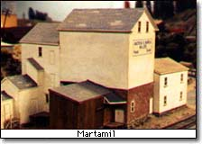
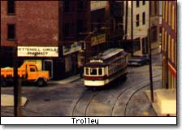
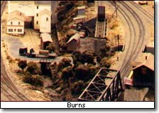

|
|
 This original benevolent meaning stands in stark contrast to the later and more commonly used meaning of a "hacker", typically as a person who breaks into computer networks in order to steal or vandalize. Here at TMRC, where the words "hack" and "hacker" originated and have been used proudly since the late 1950s, we resent the misapplication of the word to mean the committing of illegal acts. People who do those things are better described by expressions such as "thieves", "password crackers". or "computer vandals". They are certainly not true hackers, as they do not understand the hacker ethic.
 Also see the definition of "hacker" in the on-line version of the New Hacker's Dictionary.
 The Tech Model Railroad Club is featured as the first chapter of Hackers, by Steven Levy (New York: Anchor Press/Doubleday, 1984). It is credited as one (possibly the primary) source of the Hacker Culture the book describes.
Several entries in The New Hacker's Dictionary, (Second Edition, edited by Eric S. Raymond (MIT Press, 1993); ISBN 0-262-68079-3) are derived from Abridged Dictionary of the TMRC Language. There is also an online version of the book's content.
The cover article in Railroad Model Craftsman, July 1986 was a preview of the club for the 1986
NMRA convention held in Boston. A converted copy of the
text we submitted is available online.
|
Tech Model Railroad Club of
MIT Room N52-118 265 Massachusetts Avenue Cambridge, MA 02139
|
+1 617 253-3269 Email: tmrc-web@mit.edu |
{kind=link}
{kind=link}
{kind=link}